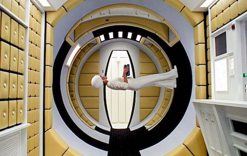
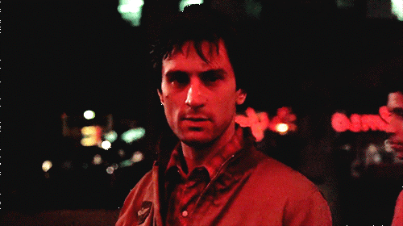

Interstellar is a 2014 science fiction epic directed by Christopher Nolan, known for his visually stunning storytelling and thought-provoking narratives. The film explores themes of love, sacrifice, and the enduring human spirit in the face of existential challenges. Set in a near-future Earth suffering from a global food crisis and environmental collapse, it tells the story of a group of astronauts led by former NASA pilot Joseph Cooper (Matthew McConaughey). Cooper is recruited for a daring mission to travel through a mysterious wormhole near Saturn to explore potentially habitable planets and secure the survival of humanity.
Curious About the Plot??
The movie follows Joseph Cooper (Matthew McConaughey), a former NASA pilot and farmer, who leads a mission through a wormhole to find a new planet.
The mission is led by Professor Brand (Michael Caine), a NASA physicist who is working on plans to save humanity.
The mission is Earth's last chance to find a new planet before the human race goes extinct.
Award
Year
Academy Awards
2015
Alliance of Women Film Journalists EDA Awards
2015
Art Directors Guild Awards
2014
Plup Fiction
Released Date: October 14, 1994
Released in 1994, Pulp Fiction fused the conventions of classic hardboiled crime stories with the indie sensibilities of the era. The film was the second theatrical feature directed by Quentin Tarantino and introduced many classic characters embodied by a cast including John Travolta, Uma Thurman, Samuel L. Jackson, Bruce Willis, Ving Rhames, and many more. It has since spawned many imitations and continues to influence filmmakers today with its fractured anthology narrative and instantly quotable dialogue.
Curious About the Plot??
Jules Winnfield (Samuel L. Jackson) and Vincent Vega (John Travolta) are two hitmen who are out to retrieve a suitcase stolen from their employer, mob boss Marsellus Wallace (Ving Rhames). Wallace has also asked Vincent to take his wife Mia (Uma Thurman) out a few days later when Wallace himself will be out of town. Butch Coolidge (Bruce Willis) is an aging boxer who is paid by Wallace to lose his fight. The lives of these seemingly unrelated people are woven together comprising of a series of funny, bizarre and uncalled-for incidents.
—Soumitra
Faced with life's cruel irony, the unpredictable stories of a well-dressed pair of low-level hitmen; a gangster's statuesque moll, and a double-crossing prizefighter become inextricably intertwined, as the small-time crooks, Honey Bunny and Pumpkin, summon up the courage to hold up their favourite L.A. diner. Entrusted with retrieving a glow-emitting leather suitcase which belongs to their boss--the powerful crime kingpin, Marsellus--instead, the dark-suited gunmen, Vincent Vega and Jules Winnfield, end up with a bloody mess. Fortunately--with men like Mr Wolf always around to handle a crisis--there's time to cool off in a long twist contest, while at the same time, the proud champion boxer, Butch, makes the decision of a lifetime. Soon, things will come full circle, as, once more, Jules and Vincent find themselves in the perfect dead-end situation, exactly where it all began: an all-too-familiar cafeteria. Is truth stranger than fiction?
—Nick Riganas
Award
Year
Independent Spirit Award for Best Feature
1995
NME Awards
1995
Palme d'Or
1994
Fight Club
Released Date: September 10, 1999
Fight Club" is a 1999 American film directed by David Fincher, based on the 1996 novel of the same name by Chuck Palahniuk. It explores themes of consumerism, masculinity, and rebellion through the story of an insomniac office worker (Edward Norton) who forms an underground fight club with a charismatic soap maker named Tyler Durden (Brad Pitt)
Curious About the Plot??
The protagonist, unnamed throughout the film, leads a monotonous life, working in a corporate job and suffering from insomnia.
He attends support groups for various illnesses to cope with his insomnia, where he encounters Marla Singer (Helena Bonham Carter), another fake attendee.
On a flight, he meets Tyler Durden, a rebellious soap salesman, and they bond over their shared dissatisfaction with society.
They form an underground fight club where men channel their frustrations through physical combat.
The fight club evolves into a larger movement known as Project Mayhem, a group that engages in acts of vandalism and destruction, challenging societal norms.
The film delves into themes of masculinity, consumerism, and the search for meaning in a materialistic world.
Award
Year
Best DVD Special Features
2001
OFCS Award
2000
Best Actor-Edward Norton
2000
Goated Movements of Cinema
Gladiator
Ridley Scott's "Gladiator," the iconic scene where Maximus Decimus Meridius reveals his identity is a pivotal moment in the film. It's a powerful declaration of his strength, loyalty, and unwavering resolve to avenge his family and the Roman Empire.
The scene occurs in the Colosseum, where Maximus, a former general, is forced to fight as a gladiator. Commodus, the emperor, challenges Maximus to remove his helmet and reveal his identity, attempting to humiliate him
The Godfather
The "bathroom scene" in "The Godfather" is a pivotal moment where Michael Corleone, the protagonist, transforms from a reluctant family member to a ruthless killer. It occurs during a meeting between Michael, his father Vito, and the mob boss Don Corleone's enemies, Virgil Sollozzo and his bodyguard.
Iconic Frames of Cinema
2001: A Space Odyssey

Stanley Kubrick told an epic of the many centuries of humanity (from our primitive roots to the great technological beyond). With this story comes magical work from Geoffrey Unsworth, who manages to somehow reinvent the cinematic language shot after shot after shot. If it’s not the illusionary work that mimics how living in space would be, it’s the supernova climactic sequence that will place you yourself in another dimension. Even fifty years later, 2001: A Space Odyssey is one of the most mind boggling visual experiences in all of film.
Taxi Driver

The orange blood of the finale, especially since Taxi Driver has a stronger execution of colour, lighting, and framing virtually everywhere else (especially since images get washed out in a pulpy, filmic coat that is so New Hollywood). Every shot here is so vibrantly coloured, and yet they are muted as well (with a play on depths of field, or, in a more blatant example, the camera panning away from Travis Bickle while he’s on the phone).
Peak BGMs of Cinema
Kill Billl By SZA
The whistling song in Twisted Nerve was composed by Bernard Herrmann and is the main soundtrack for the film.
Twisted Nerve is about a troubled young man with multiple personalities who goes on a killing spree.
The song has been reused for other killers.
Interstellar By Hans Zimmer
The whistling song in Twisted Nerve was composed by Bernard Herrmann and is the main soundtrack for the film.
Twisted Nerve is about a troubled young man with multiple personalities who goes on a killing spree.
The song has been reused for other killers.